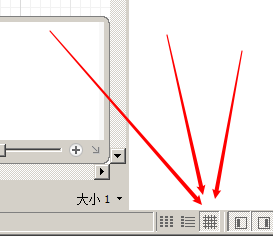
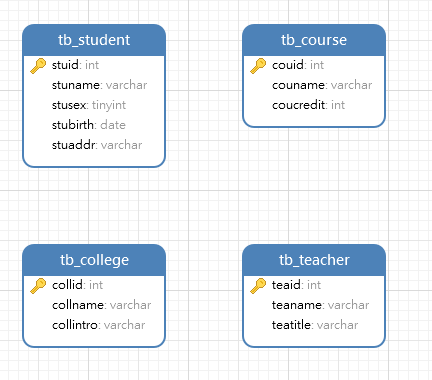
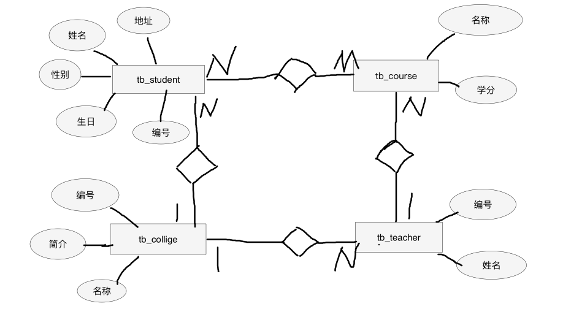
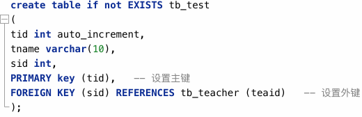
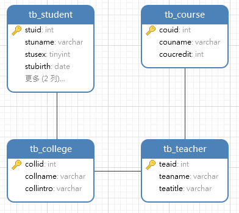

SQL2
1. ER图
ER图也称实体关系图
是通过图表的形式来表示数据库中表和字段以及表和表之间的关系
在NAVIcat等可视化工具里可以通过点击以下按钮来进入ER图界面

如图：

上图是一张还没有建立连接的ER图(不标准)
标准的ER图：


表和表之间的关系主要有四种：
一对一、一对多、多对一、多对多
2. 外键约束
让字段的值取值范围在另外一张表的主键中
添加外键约束：
- 保证当前表中有一个字段能够保存另外一张表的主键
- 添加外键约束
不同对应关系外键的添加要求不同：
- 一对一：可以添加到任意一张表中
- 一对多和多对一：添加到多的表中
- 多对多：两张表没有办法建立多对多的对应关系，需要第三张表才行
3. 外键约束的添加和删除
1）创建表或者添加字段的时候直接在字段后面添加约束

2）通过修改表的表示添加和删除约束
先专门新建一列
-- 在学生表中新建一列用来保存学院归属
alter table tb_stuent add column colid int comment '所在学院';主键约束/唯一约束
添加：
alter table 表名 add constraint 约束索引名 约束名(字段);给指定字段添加指定约束(只能添加唯一约束和主键约束)
栗子：
alter table tb_stuent add constraint unique_colid unique (colid);删除：
alter table 表名 drop index 约束索引名;删除指定索引的约束
外键约束
添加：
alter table 表1名 add constraint 约束索引名 foreign key (字段1) references 表2 (字段2)给表1中的字段1添加外键约束，并且字段1的值依赖表2中的字段2
注意：字段1和字段2不能同名！
栗子：
alter table tb_student add constraint fk_collid_coll foreign key (colid) references tb_college (collid);删除：
alter table tb_student drop foreign key fk_collid_coll;
栗子：
-- 给学生添加所在学院的外键约束
ALTER TABLE tb_student ADD COLUMN colid INT COMMENT '所在学院';
ALTER TABLE tb_student ADD CONSTRAINT fk_collid_stu FOREIGN KEY (colid) REFERENCES tb_college (collid);
-- 给老师添加所在学院的外键约束
ALTER TABLE tb_teacher ADD COLUMN cid INT COMMENT '所在学院';
ALTER TABLE tb_teacher ADD CONSTRAINT fk_cid_tea FOREIGN KEY (cid) REFERENCES tb_college (collid);
-- 给课程添加上课老师的外键约束
ALTER TABLE tb_course ADD COLUMN tid INT COMMENT '上课老师';
ALTER TABLE tb_course ADD CONSTRAINT fk_tid_cou FOREIGN KEY (tid) REFERENCES tb_teacher (teaid);结果：

多对多关系的外键约束
多对多必须用第三张表来关联
-- 先新建一个表，新建的时候关联外键 create table if not exists tb_record ( reid int auto_increment comment '选课记录编号', sid int comment '学生的外键', cid int comment '课程外键', redate date comment '选课日期', score float comment '分数', primary key (reid), foreign key (sid) references tb_student (stuid), foreign key (cid) references tb_course (couid) );
4. 高级查询
1）去重
select distinct 字段名 from 表名; -- 获取指定字段的值并且去重
-- 栗子：
select distinct stuage from t_student;2）限制和分页
限制：
select * from 表名 limit N; -- 查询时只获取前N条的数据
-- 栗子：
select * from tb_stuent limit 5;分页(偏移)：
select * from 表名 limit N offset M; -- 查询时跳过前M条数据，获取N条数据
select * from 表名 limit M,N; -- 作用同上，第二种写法而已
-- 栗子：
select * from tb_stuent limit 5 offset 3; -- 获取4到8条记录
select * from tb_stuent order by score desc limit 3; -- 获取全班成绩前三名的学生的信息3）聚合
MySQL中的一些函数：
max() min() sum() avg() count()
最大值，最小值，求和，求平均值，计数
若数据中有空值，则不会计算在内 (比如说没有记录成绩的同学不会拉低全班平均分)
select max(score) as '最高分' from tb_record; -- 获取record表中的最高分数
-- 其余函数用法同上4）分组
select 聚合操作 from 表名 group by (字段);
按指定字段的值对表进行分组，然后对每个分组进行聚合操作
分组规则是指定字段值相同的作为一组
注意：分组后，除了分组字段以外，其他字段只能聚合操作
栗子：
select sid, avg(score) from tb_record group by (sid); -- 获取每个学生的平均分
select cid, avg(score) from tb_record group by (cid); -- 获取每个学科的平均分
select sid, count(cid) from tb_record group by (sid); -- 获取每个学生选课的数量对分组后的数据加条件，不能用where，而是用having
栗子：
-- 获取选了两门课以上的学生的id (分组+聚合)
select sid, count(cid) from tb_record group by (sid) having count(cid)>2;
-- 或者
select sid, count(cid) as c_course from tb_record group by (sid) having c_course>2;5）子查询：
将一个查询的结果作为另外一个查询的条件或者查询对象
第一种子查询：
将查询结果作为另外一个查询的条件
直接上栗子：
-- 获取成绩最高的所有学生的id -- 将select max(score) as '最高分' from tb_record;作为条件 select sid from tb_record where score=(select max(score) as '最高分' from tb_record);
-- 获取选了两门课程以上的学生的姓名
select stuname from tb_student where stuid in (select sid from tb_record group by (sid) having count(cid)>2);
```第二种子查询：
将一个查询的结果作为另一个查询的查询对象
注意：必须重命名！！！
直接上栗子：
-- 将一个查询的结果作为另一个查询的对象 select stuname from (select * from tb_student limit 4, 5;) as t1; -- 这里必须重命名！
6） 连接查询：
又叫联表查询、联接查询等
同时查询多张表
select * from 表名1, 表名2, 表名3, ... 连接条件 查询条件;
注意：如果既有连接条件，又有查询条件，查询条件必须放在连接条件的后面
栗子：
-- 查询所有学生的名字和对应的学院名字：
select stuname, collname from tb_student, tb_college; -- 如果直接执行，会打印一个笛卡尔集，所以要添加连接条件，如下：
select stuname, collname from tb_student, tb_college where tb_student.colid=tb_college.collid;
-- 查询所有学生每个学科的成绩：xxx(学生) xxx(学科名) xx(分数)
select stuname, couname, score from tb_student, tb_course, tb_record where tb_student.stuid=tb_record.sid and tb_course.couid=tb_record.cid;
-- 查询所有大于70分的学生的学科成绩：
select stuname, couname, score from tb_student, tb_course, tb_record where tb_student.stuid=tb_record.sid and tb_course.couid=tb_record.cid and score>70;练习：
先上自己做的：
-- 查询所有学生信息
SELECT * FROM tb_student;
-- 查询所有课程名称及学分
SELECT couname, coucredit FROM tb_course;
-- 查询所有学生的姓名和性别
SELECT stuname AS '姓名', IF(stusex, '男', '女') AS '性别' FROM tb_student;
-- 查询所有女学生的姓名和出生日期
SELECT stuname, stubirth FROM tb_student WHERE stusex=0;
-- 查询所有80后学生的姓名、性别和出生日期
SELECT stuname AS '姓名', IF(stusex, '男', '女') AS '性别', stubirth AS '生日' FROM tb_student WHERE stubirth>'1979-12-31';
-- 查询姓"杨"的学生姓名和性别
SELECT stuname AS '姓名', IF(stusex, '男', '女') AS '性别' FROM tb_student WHERE stuname LIKE '杨%';
-- 查询姓"杨"名字两个字的学生姓名和性别
SELECT stuname AS '姓名', IF(stusex, '男', '女') AS '性别' FROM tb_student WHERE stuname LIKE '杨_';
-- 查询姓"杨"名字三个字的学生姓名和性别
SELECT stuname AS '姓名', IF(stusex, '男', '女') AS '性别' FROM tb_student WHERE stuname LIKE '杨__';
-- 查询名字中有"不"字或"嫣"字的学生的姓名
SELECT stuname AS '姓名' FROM tb_student WHERE stuname LIKE '%不%' OR stuname LIKE '%嫣%';
-- 查询没有录入家庭住址的学生姓名
SELECT stuname AS '姓名' FROM tb_student WHERE stuaddr IS NULL;
-- 查询录入了家庭住址的学生姓名
SELECT stuname AS '姓名' FROM tb_student WHERE stuaddr IS NOT NULL;
-- 查询男学生的姓名和生日按年龄从大到小排列
SELECT stuname AS '姓名', stubirth AS '生日' FROM tb_student WHERE stusex=1 ORDER BY stubirth;
-- 查询年龄最大的学生的出生日期
SELECT MIN(stubirth) AS '年龄最大学生的生日' FROM tb_student;
-- 查询年龄最小的学生的出生日期
SELECT MAX(stubirth) AS '年龄最小学生的生日' FROM tb_student;
-- 查询男女学生的人数
SELECT COUNT(stuid) AS '人数', IF(stusex, '男', '女') AS '性别' FROM tb_student GROUP BY stusex;
-- 查询课程编号为1111的课程的平均成绩
SELECT AVG(score) AS '1111课程平均成绩' FROM tb_record WHERE cid=1111;
-- 查询学号为1001的学生所有课程的平均分
SELECT AVG(score) AS '1001学生平均成绩' FROM tb_record WHERE sid=1001;
-- 查询每个学生的学号和平均成绩
SELECT sid AS '学号', AVG(score) AS '平均成绩' FROM tb_record GROUP BY sid;
-- 查询平均成绩大于等于90分的学生的学号和平均成绩
SELECT sid AS '学号', AVG(score) AS '平均成绩' FROM tb_record GROUP BY sid HAVING AVG(score)>=90;
-- 查询选了两门以上的课程的学生姓名
SELECT stuname AS '姓名' FROM tb_student WHERE stuid in (SELECT sid FROM tb_record GROUP BY sid HAVING COUNT(cid)>2);
-- 查询学生姓名、课程名称以及成绩
SELECT stuname AS '姓名', couname AS '课程名称', score AS '成绩' FROM tb_student, tb_course, tb_record WHERE tb_student.stuid=tb_record.sid AND tb_course.couid=tb_record.cid;
-- 查询学生姓名、课程名称以及成绩按成绩从高到低查询第11-15条记录
SELECT stuname AS '姓名', couname AS '课程名称', score AS '成绩' FROM tb_student, tb_course, tb_record WHERE tb_student.stuid=tb_record.sid AND tb_course.couid=tb_record.cid ORDER BY score DESC LIMIT 10,5;
-- 查询选课学生的姓名和平均成绩
SELECT stuname AS '姓名', AVG(score) AS '平均成绩' FROM tb_student, tb_record WHERE tb_student.stuid=tb_record.sid GROUP BY stuid;
-- 查询每个学生的姓名和选课数量
SELECT stuname AS '姓名', COUNT(cid) AS '选课数量' FROM tb_student, tb_record WHERE tb_student.stuid=tb_record.sid GROUP BY stuid;老师答案：
-- 查询所有学生信息
SELECT * from tb_student;
-- 查询所有课程名称及学分(映射)
SELECT couname, coucredit FROM tb_course;
-- 查询所有学生的姓名和性别(映射)
SELECT stuname, if(stusex,'男', '女') as gender FROM tb_student;
-- 查询所有女学生的姓名和出生日期
SELECT stuname, stubirth FROM tb_student where stusex=0;
-- 查询所有80后学生的姓名、性别和出生日期
SELECT stuname, if(stusex, '男', '女') as gender, stubirth FROM tb_student
WHERE stubirth >= '1980-1-1' and stubirth <= '1989-12-31';
-- 查询姓"杨"的学生姓名和性别(模糊)
SELECT stuname, if(stusex, '男', '女') as gender FROM tb_student where stuname like '杨%';
-- 查询姓"杨"名字两个字的学生姓名和性别
SELECT stuname, if(stusex, '男', '女') as gender FROM tb_student where stuname like '杨_';
-- 查询姓"杨"名字三个字的学生姓名和性别
SELECT stuname, if(stusex, '男', '女') as gender FROM tb_student where stuname like '杨__';
-- 查询名字中有"不"字或"嫣"字的学生的姓名
SELECT stuname FROM tb_student where stuname like '%不%' or stuname like '%嫣%';
-- 查询没有录入家庭住址的学生姓名
SELECT stuname FROM tb_student WHERE stuaddr is NULL;
-- 查询录入了家庭住址的学生姓名
SELECT stuname FROM tb_student WHERE stuaddr is not NULL;
-- 查询学生选课的所有日期(去重)
SELECT distinct redate FROM tb_record;
-- 查询学生的家庭住址(去重)
select distinct stuaddr FROM tb_student;
-- 查询男学生的姓名和生日按年龄从大到小排列(排序)
SELECT stuname, stubirth FROM tb_student where stusex=1 ORDER BY stubirth;
-- 查询年龄最大的学生的出生日期(聚合)
SELECT min(stubirth) FROM tb_student;
-- 查询年龄最小的学生的出生日期(聚合)
SELECT max(stubirth) FROM tb_student;
-- 查询男女学生的人数(分组和聚合)
SELECT if(stusex, '男生', '女生') as gender, count(stuid) as c_stu FROM tb_student GROUP BY (stusex);
-- 查询课程编号为1111的课程的平均成绩
-- select avg(score) FROM tb_record GROUP BY (cid) having cid=1111;
SELECT avg(score) FROM tb_record WHERE cid=1111;
-- 查询学号为1001的学生所有课程的平均分
SELECT avg(score) FROM tb_record WHERE sid=1001;
-- 查询每个学生的学号和平均成绩(分组和聚合)
SELECT sid, avg(score) FROM tb_record GROUP BY (sid);
-- 查询平均成绩大于等于90分的学生的学号和平均成绩(分组和聚合)
SELECT sid, avg(score) as avg_score FROM tb_record GROUP BY (sid) having avg_score>=90;
-- 查询年龄最大的学生的姓名(子查询)
-- select min(stubirth) from tb_student;
SELECT stuname FROM tb_student where stubirth=(select min(stubirth) from tb_student);
-- 查询年龄最大的学生姓名和年龄
SELECT stuname, DATEDIFF(CURDATE(),stubirth) div 365 as age FROM tb_student where stubirth=(select min(stubirth) from tb_student);
-- 查询选了两门以上的课程的学生姓名(子查询，分组，聚合)
-- select sid FROM tb_record GROUP BY (sid) HAVING count(cid)>2;
select stuname FROM tb_student where stuid in (select sid FROM tb_record GROUP BY (sid) HAVING count(cid)>2);
-- 查询学生姓名、课程名称以及成绩(连接查询)
select stuname, couname, score FROM
tb_student,
tb_course,
tb_record
where tb_student.stuid=tb_record.sid and tb_course.couid=tb_record.cid;
-- 查询学生姓名、课程名称以及成绩按成绩从高到低查询第11-15条记录
select stuname, couname, score FROM
tb_student,
tb_course,
tb_record
where tb_student.stuid=tb_record.sid and tb_course.couid=tb_record.cid
ORDER BY score DESC
LIMIT 10, 5;
-- 查询选课学生的姓名和平均成绩(连接查询，子查询)
select stuname, avg(score) FROM
tb_student as t1,
tb_record as t2
where t1.stuid=t2.sid GROUP BY(sid);
-- 方法2：
-- select sid, avg(score) as avg_s FROM tb_record GROUP BY (sid);
select stuname, avg_s FROM
tb_student as t1,
(select sid, avg(score) as avg_s FROM tb_record GROUP BY (sid)) as t2
where t1.stuid=t2.sid;
-- 查询每个学生的姓名和选课数量
select stuname, count(cid) FROM
tb_student as t1,
tb_record as t2
WHERE t1.stuid=t2.sid
GROUP BY (sid);
-- select sid, COUNT(cid) as count_c FROM tb_record GROUP BY (sid);
SELECT stuname, count_c FROM
tb_student as t1,
(select sid, COUNT(cid) as count_c FROM tb_record GROUP BY (sid)) as t2
WHERE t1.stuid=t2.sid;